1) นโยบายภาพรวมกรมฯ ปีงบประมาณ 2570
- วิสัยทัศน์: "เชิดชูภูมิปัญญาไทย ต่อยอดเศรษฐกิจใหม่ ก้าวไกลสู่สากล" พันธกิจ "สร้างสรรค์คุณค่ายั่งยืน" (Create – Value – Sustain) ค่านิยม Commitment · Creativity · Collaboration
- 4 มิติยุทธศาสตร์:
- Service Excellence ยกระดับบริการสู่มาตรฐานพรีเมียมสากล: TTM Center Excellence, คลินิกเฉพาะทาง, นวดไทยฟื้นฟูผู้ป่วยหลอดเลือดสมองระยะกลาง (IMC), ยาปรุงเฉพาะราย โรคสะเก็ดเงิน, ยาตำรับใช้ในโรงพยาบาล
- Wellness & Longevity สุขภาพดีและอายุยืน: มาตรฐานเวลเนสอัตลักษณ์ไทย (TWD/TWC), คลินิกอายุวัฒนะ, อาหารเป็นยา (Thai Food Good Health), โครงการพระราชดำริฯ น้ำพุร้อนสันกำแพง
- Health Economy เศรษฐกิจสุขภาพ (New S-Curve): Beauty Tech, หลักสูตรนวด 1,300 ชม./นวด 4 โพธิ์/นวดนักกีฬา/นวดมีบุตรยาก/ฟื้นฟูสมรรถภาพทางเพศ
- High-Performance, Digital & Innovative Organization With Good Governance: DTAM NEXT E-Service, ตำรับยาแผนไทยแห่งชาติ, ส่งเสริม ควบคุม กัญชา
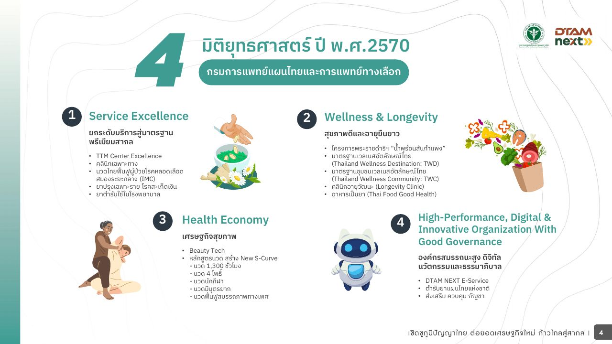
2) ตัวชี้วัดร่วมกับพื้นที่ ปีงบประมาณ 2570 (28 ตัว / 11 หน่วยงาน)
| หน่วยงานเจ้าของตัวชี้วัด | จำนวน | เรื่องหลัก (สรุปจากเอกสาร) | อ่านต่อ |
|---|---|---|---|
| สถาบันการแพทย์แผนไทย (สพท.) | 7 | IMC หลอดเลือดสมอง🏅 PA จังหวัด, ผดุงครรภ์ไทย, หมอนวดมือทอง, นวด 4 โพธิ์, หลักสูตรนวด | หัวข้อ 7 |
| สถาบันการแพทย์ทางเลือก (สทล.) | 3 | คลินิกอายุวัฒนะ รพช., ผู้ติดยาเสพติด (New Life), TCM HA | หัวข้อ 7 |
| กองคุ้มครองและส่งเสริมภูมิปัญญาฯ (กคพ.) | 3 | หมอพื้นบ้าน, ภูมิปัญญา/ตำรับ จังหวัดละ ≥3 รายการ, นายทะเบียนจังหวัด ≥4 กิจกรรม | หัวข้อ 6 |
| กองพัฒนายาแผนไทยและสมุนไพร (กยส.) | 2 | มูลค่ายา UC ≥2,000 ล้าน, ยาปรุงเฉพาะราย ≥80% | หัวข้อ 3 |
| กองกัญชาทางการแพทย์ (กกพ.) | 2 | ตรวจร้านกัญชา 100%, กัญชาทางการแพทย์ในหน่วยบริการปฐมภูมิ | หัวข้อ 5 |
| สถาบันวิจัยการแพทย์แผนไทยฯ (สวพ.) | 1 | แผนวิจัย 1 แผน ตอบโจทย์ยุทธศาสตร์ | หัวข้อ 9 |
| กองนวัตกรรมการแพทย์แผนไทยฯ (กนพ.) | 1 | ผู้ประกอบการสมุนไพร ปัญญ-พัฒน์, ปลูกไทยด้วยใจรักษ์ | หัวข้อ 8 |
| ศูนย์การแพทย์แผนไทยฯ (ศพท.) | 3 | ศูนย์ 16 แห่ง: ยาปรุงเฉพาะราย 5 กลุ่ม, คลินิกเฉพาะทาง, อบรมนวด, มาตรฐานสภาฯ, วิจัย | หัวข้อ 7 |
| สถาบันอายุวัฒนะ (สอว.) | 3 | ยกระดับ TFGH (เมนูอาหารสุขภาพ 4 ดาว) | หัวข้อ 7 |
| กองเวลเนส (กวน.) | 2 | มาตรฐาน TWD / TWC | หัวข้อ 7 |
| กองกฎหมาย (กม.) | 1 | ยกร่างกฎหมายลำดับรองตาม พ.ร.บ.คุ้มครองฯ ฉบับใหม่ ≥1 ฉบับ | หัวข้อ 6 |
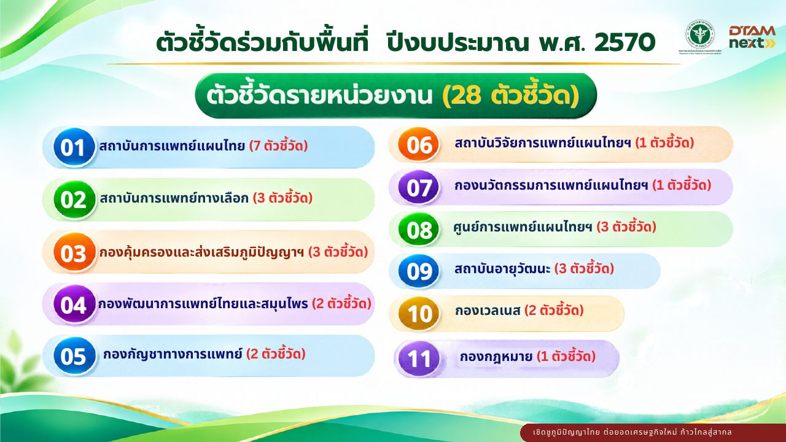
รายละเอียดเพิ่มเติม: ตัวชี้วัดรายหน่วยงานรวม 28 ตัว กระจายใน 11 หน่วยงาน ได้แก่ สถาบันการแพทย์แผนไทย 7 · สถาบันการแพทย์ทางเลือก 3 · กองคุ้มครองและส่งเสริมภูมิปัญญาฯ 3 · ศูนย์การแพทย์แผนไทยฯ 3 · สถาบันอายุวัฒนะ 3 · กองพัฒนาการแพทย์ไทยและสมุนไพร 2 · กองกัญชาทางการแพทย์ 2 · กองเวลเนส 2 · สถาบันวิจัยฯ 1 · กองนวัตกรรมฯ 1 · กองกฎหมาย 1
3) ยาสมุนไพรสิทธิ UC และยาปรุงเฉพาะราย (กยส.)
ตัวชี้วัดที่ 1: มูลค่าการใช้ยาสมุนไพรสิทธิ UC ≥ 2,000 ล้านบาท/ปี
สูตรเป้าหมายรายเขต: 2,000 ล้านบาท × [(สัดส่วนประชากร UC × 0.5) + (สัดส่วนผลงานปี 69 × 0.5)] · ประชากร UC อ้างอิง สปสช. ก.ย. 69
| เขตสุขภาพ | ประชากร UC (คน) | ผลงานปี 69 (ล้านบาท) | เป้าปี 70 (ล้านบาท) | เพิ่ม/ลด |
|---|---|---|---|---|
| เขต 1 | 3,857,523 | 143.88 | 175.24 | +21.80% |
| เขต 2 | 2,465,228 | 92.99 | 112.61 | +21.10% |
| เขต 3 | 2,055,647 | 80.97 | 95.93 | +18.47% |
| เขต 4 | 3,521,923 | 82.97 | 131.35 | +58.31% |
| เขต 5 | 3,737,241 | 98.23 | 145.41 | +48.03% |
| เขต 6 ← สมุทรปราการอยู่เขตนี้* | 4,291,424 | 115.22 | 168.41 | +46.16% |
| เขต 7 | 3,505,970 | 142.56 | 166.25 | +16.62% |
| เขต 8 | 4,062,361 | 325.50 | 287.54 | −11.66% |
| เขต 9 | 4,743,835 | 176.89 | 215.48 | +21.82% |
| เขต 10 | 3,244,140 | 217.32 | 204.40 | −5.95% |
| เขต 11 | 3,409,081 | 92.07 | 134.10 | +45.65% |
| เขต 12 | 3,936,336 | 120.58 | 163.29 | +35.42% |
| รวม 12 เขต | 42,830,709 | 1,689.17 | 2,000.00 | +18.40% |
*การระบุว่าสมุทรปราการอยู่เขตสุขภาพที่ 6 เป็นข้อมูลทั่วไปของผู้จัดทำ ไม่ได้ปรากฏในเอกสารชุดนี้
เป้าหมายรายไตรมาสและมาตรการ
- Q1 (ต.ค.–ธ.ค. 69): มีข้อมูลฐานและแนวทางดำเนินงานระดับจังหวัด/เขต, ทบทวนรายการยา รหัสยา และความพร้อมส่งข้อมูล
- Q2: ประเทศสะสม ≥1,000 ล้านบาท · แต่ละเขตสะสม ≥50% ของเป้า · Q3: ≥1,500 ล้านบาท · ≥75% · Q4: ≥2,000 ล้านบาท · ≥100% (จังหวัดรายงานผลและปัญหารายไตรมาส)
- 4 มาตรการ: (1) วิเคราะห์และวางแผน ทบทวนผลงานรายหน่วย ใช้เป้าเขตวางแผนจังหวัด (2) เพิ่มการเข้าถึงและใช้ยา สื่อสารผู้บริหารและสหวิชาชีพ พัฒนาความรู้การสั่งใช้ตามข้อบ่งใช้/แนวเวชปฏิบัติ (3) พัฒนาคุณภาพข้อมูล ตรวจรหัสยามาตรฐาน 24 หลัก บันทึก HIS/43 แฟ้ม ติดตาม HDC (4) ติดตามผลด้วย HDC/Dashboard ที่กรมกำหนด รายงานมูลค่า UC สะสมของจังหวัด
สถานการณ์ที่เอกสารชี้ให้เห็น
- ผลงานกระจุกตัว: 12 รายการ = 72% ของมูลค่า เขต 8 และ 10 เป็นต้นแบบ (218% และ 179% ของสัดส่วนประชากร) ขณะที่เขต 4, 5, 6 ต่ำสุด 64–73%
- จำนวนรายการยาต่อหน่วย: รพ.สต. 76% มียา ≥10 รายการ ส่วนใหญ่อยู่ช่วง 10–19 รายการ (6,093 แห่ง) · มี รพ.สต. 2,177 แห่งที่จ่ายเพียง 5–9 รายการ · ข้อเสนอ: ยก รพ.สต. 5–9 รายการให้ ≥10 และ 10–19 ให้ ≥20 โดยให้ รพ.แม่ข่ายจัดสรรยาลงเครือข่าย (หน่วยที่มียา 10–19 ที่ขยับเป็น ≥20 มีโอกาสเพิ่มมูลค่าต่อแห่ง 2.3 เท่า)
- จังหวัดตัวอย่าง: มูลค่าต่อแพทย์แผนไทยสูง นครพนม (60 คน, 1.05 ล้านบาท/คน) อุดรธานี และหนองคาย · ต่ำ ระยอง (0.09) ภูเก็ต (0.09) สมุทรสาคร (0.12)
- SWOT: จุดอ่อนคือผลงานกระจุกในบางเขต ใช้ยาไม่ครอบคลุม ยังใช้ศักยภาพแพทย์แผนไทยไม่เต็มที่ · อุปสรรคคือยาขาดแคลน/มีน้อยรายการ เกณฑ์ราคาคอร์ส/แนวทางเบิกจ่ายค่าชดเชย
ปัญหารหัสยา: ยาที่จ่ายแล้วเบิกไม่ได้
- รหัสยาสมุนไพร 24 หลัก / TTMTID / Drug Group ไม่ตรงกัน ทำให้เบิกจาก สปสช. ไม่ได้ ประมาณการมูลค่าที่น่าจะเบิกไม่ได้ปีงบ 69 = 394.9 ล้านบาท (ผู้ผลิต 441 รายที่ยาไม่มี Drug Group)
- จากเด็ค Hackathon: 1 ใน 3 ของครั้งที่จ่ายยาสมุนไพร UC เบิกไม่ได้ (33.1%) อัตรารหัสยาผิดพลาด 7.63% (15,301 จาก 200,534 รายการ) สาเหตุคือข้อมูลอ้างอิง 3 ชุดอยู่คนละที่ (รหัสยา 24 หลักของกรมฯ, TTMT Master + Drug Group ของ สมสท., อัตราเบิกต่อ course ของ สปสช.)
- ทีมนราธิวาสพัฒนาระบบตรวจรหัสยา (เว็บ + API + MCP) ผลคือ รพ. 13/13 แห่งเข้าร่วม 12 แห่งได้รางวัลแห่งละ 200,000 บาท รวม 2.4 ล้านบาท และอีกตัวอย่างหนึ่งในเด็คมียอดชดเชย 32 รายการเพิ่ม +49.1% (7.84 → 11.68 ล้านบาท) จากการแก้ข้อมูลเบิกให้ถูกต้อง โดยไม่ได้ซื้อยาเพิ่ม
- แผนต่อยอด: HERB Center เปิด API กลางให้ระบบ HIS ตรวจรหัสยาอัตโนมัติ ใช้ตรวจก่อนส่งเบิกและรายงานผลรายเดือน
ตัวชี้วัดที่ 2: หน่วยบริการพร้อมจัดยาปรุงเฉพาะราย ≥ ร้อยละ 80 (722 แห่ง)
- ขอบเขต: หน่วยบริการสังกัด สธ. · องค์ประกอบความพร้อม 4 ด้าน: บุคลากร, วัตถุดิบ/สมุนไพรที่ใช้ปรุง, สถานที่/อุปกรณ์/ระบบควบคุมคุณภาพ, ข้อมูล/การเบิกจ่าย
- สถานะปัจจุบัน: เปิดบริการแล้ว 273 แห่ง (รพศ. 11, รพท. 26, รพช. 236) และทุกศูนย์ของกรมฯ
- จังหวัดต้องสำรวจและจำแนก 3 กลุ่ม: เปิดให้บริการแล้ว · พร้อมแต่ยังไม่เปิด · ต้องได้รับการพัฒนา
- ความพร้อมสะสม: Q1 คู่มือพร้อมใช้และผลสำรวจ · Q2 ≥40% · Q3 ≥60% · Q4 ≥80% (722 แห่ง)
- ตัวยากลุ่มเริ่มต้นในสไลด์: ปวดกล้ามเนื้อ, ยาสตรี/หลังคลอด/บำรุงเลือด, ยาปรับสมดุลร่างกาย · วัตถุดิบจากโรงงาน WHO GMP/PIC/S และวิสาหกิจชุมชนที่ผ่านมาตรฐาน · มีการกำกับผลการรักษาและเก็บข้อมูลอาการไม่พึงประสงค์ (ADR)
- บทบาทจังหวัด: สำรวจและวางแผนพัฒนา → ถ่ายทอดคู่มือมาตรฐานและคู่มือเบิกจ่าย → เตรียมคน วัตถุดิบ สถานที่ ระบบคุณภาพ → ติดตามความพร้อม การให้บริการ และการส่งเบิก
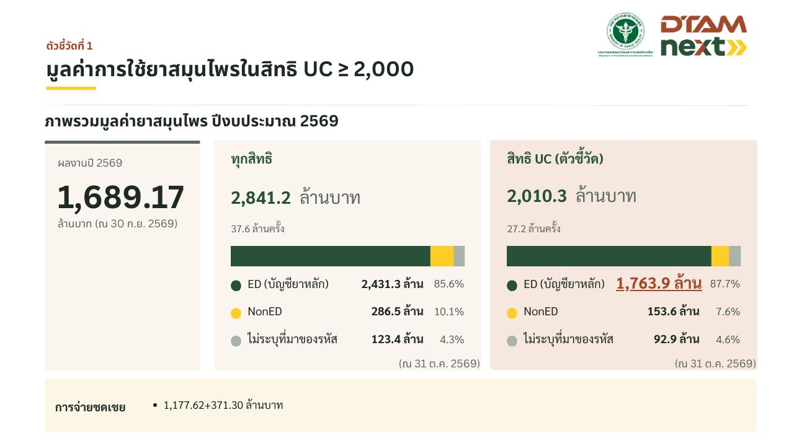
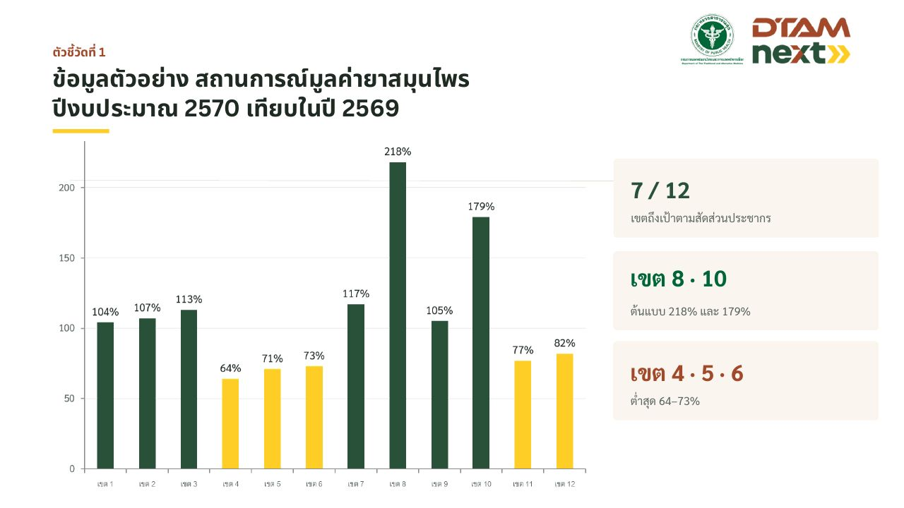
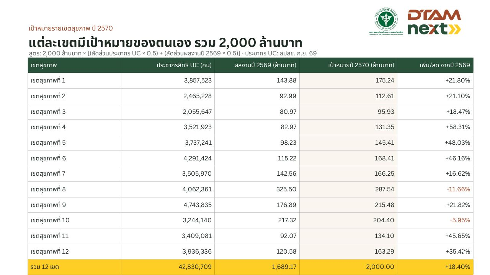
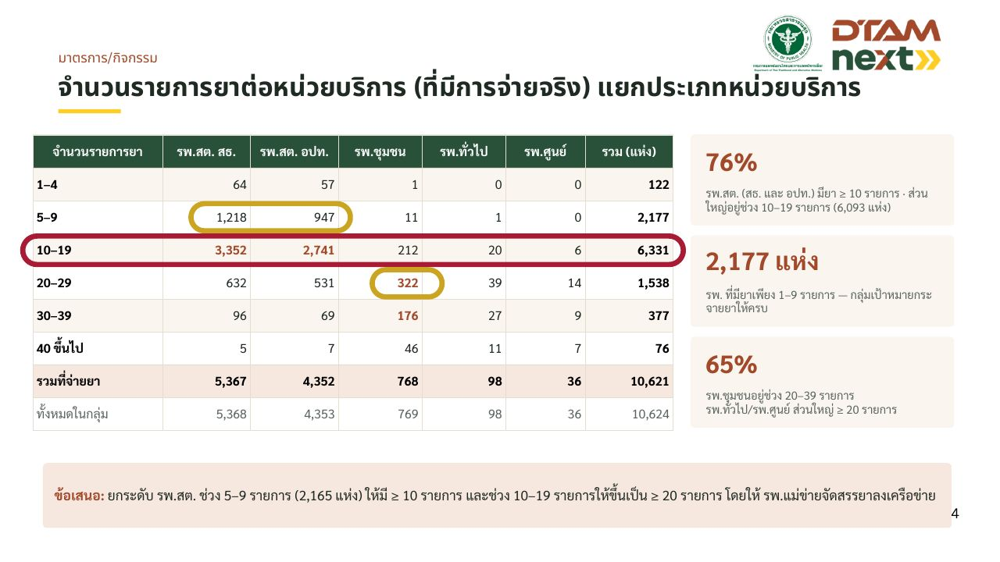
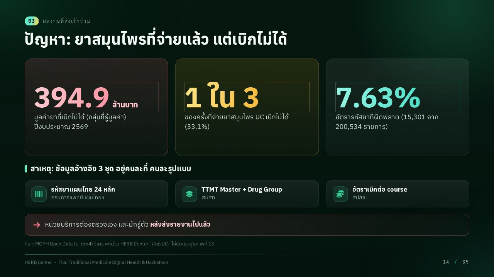
รายละเอียดเพิ่มเติม: ปี 2569 มูลค่ายาสมุนไพรทุกสิทธิ 2,841.2 ล้านบาท (37.6 ล้านครั้ง) เป็นสิทธิ UC 2,010.3 ล้านบาท โดยยาในบัญชียาหลักแห่งชาติคิดเป็น 87.7% ของ UC เป้าหมายปี 2570 คือ 2,000 ล้านบาท แบ่งรายเขตด้วยสูตรสัดส่วนประชากร UC 50% + ผลงานปี 2569 50% เขตสุขภาพที่ 6 (ครอบคลุมสมุทรปราการ) ผลงานปี 2569 อยู่ที่ 115.22 ล้านบาท เป้าปี 2570 คือ 168.41 ล้านบาท (+46.16%) และระดับผลงานเทียบเป้าตามสัดส่วนประชากรอยู่ที่ 73% ด้านการเบิกจ่าย พบรหัสยาผิดพลาด 7.63% (15,301 จาก 200,534 รายการ) มูลค่าที่เบิกไม่ได้ 394.9 ล้านบาท สาเหตุจากข้อมูลอ้างอิง 3 ชุดอยู่คนละที่
4) ร่างข้อเสนอสิทธิประโยชน์ สปสช. ปี 2570
จากที่ประชุมคณะอนุกรรมการพัฒนาระบบและกำกับติดตามการเข้าถึงบริการการแพทย์แผนไทยและการแพทย์ทางเลือก ครั้งที่ 1/2569 วันที่ 12 พ.ย. 2569 (ยังเป็นร่าง)
| # | รายการ | วิธีจ่าย / ข้อสังเกต |
|---|---|---|
| 1 | ยาสมุนไพรในบัญชียาหลักแห่งชาติที่ใช้กับโรคที่พบบ่อย และกัญชาทางการแพทย์ 32 รายการ | Fee schedule per course ประมวลผลจ่ายเดือนละ 2 ครั้ง |
| 2 | ยาสมุนไพรในบัญชียาหลักฯ ส่วนที่เหลือ | Point system within global budget ประมวลผลจ่าย 1 งวดในไตรมาส 4 · เหมาจ่ายเพิ่มเติมตามเกณฑ์ผลลัพธ์บริการ |
| 3 | หน่วยบริการที่ใช้สมุนไพรทดแทนยาแผนปัจจุบัน 100% (ต่อเนื่องจากปี 69) | ปรับเพิ่มหลักเกณฑ์ |
| 4 | ยาปรุงเฉพาะรายกรณี รักษาโรคสะเก็ดเงิน | รอคณะอนุกรรมการบรรจุเข้าบัญชี 3 · เหมาจ่ายต่อ course |
| 5 | หัตถการแพทย์แผนไทย (นวด อบ ประคบ) + ข้อเสนอบริการฟื้นฟูมารดาหลังคลอด | คงเดิม Point system within global budget · Pre-paid 50% ภายในไตรมาส 1 (ประมวลจากงบปีก่อน) · Point = 1 บาท · ส่วนที่เหลือ Post paid ตามผลงานทั้งปี ประมวลจ่าย 1 งวดใน Q4 |
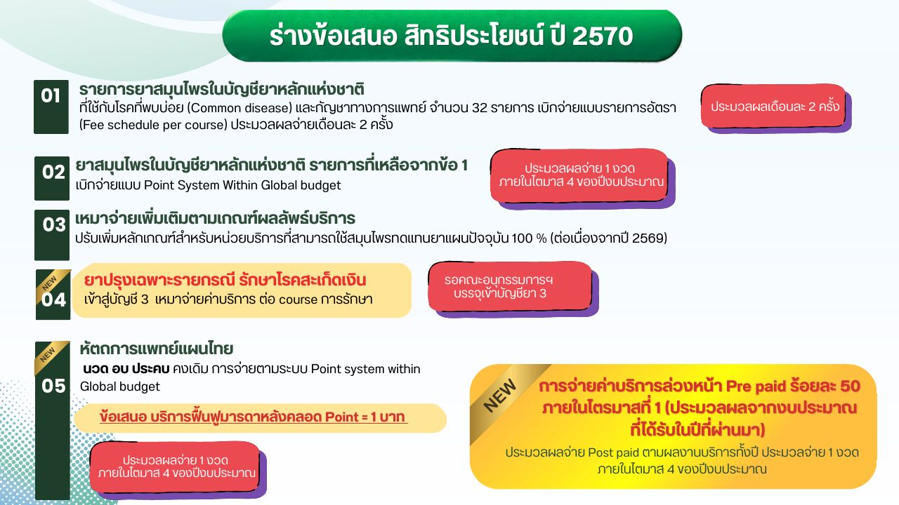
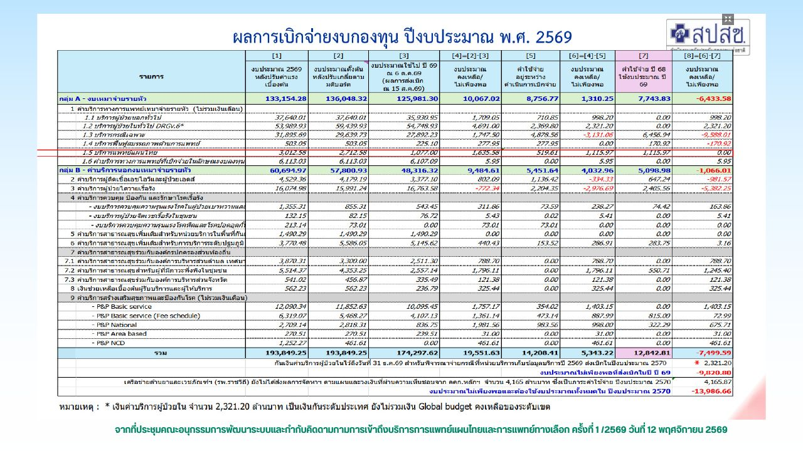
รายละเอียดเพิ่มเติม: ตารางผลเบิกจ่ายระบุยอดรวมที่ไม่เพียงพอและต้องใช้งบปี 2570 ต่อ ตามสไลด์ (ตัวเลขทางการเงินให้ตรวจสอบกับไฟล์ต้นฉบับก่อนนำไปอ้างอิง)
5) กัญชาทางการแพทย์ (กองกัญชาทางการแพทย์ · นพ.พีรชา คูเกษมกิจ)
หัวข้อสื่อสารนโยบาย: "ยกระดับการกำกับดูแลสู่การใช้ประโยชน์กัญชาทางการแพทย์ในระบบสาธารณสุข"
5.1 ตัวชี้วัด 2 ตัว และแผนรายไตรมาส
| ตัวชี้วัด | เป้า / ค่าเป้าหมาย | ไตรมาส |
|---|---|---|
| KPI-1 ยกระดับประสิทธิภาพการบังคับใช้กฎหมายกัญชา กัญชง กระท่อม เห็ดขี้ควาย — ร้อยละของร้านกัญชาที่ได้รับอนุญาตและผ่านเกณฑ์มาตรฐาน | ร้อยละ 100 (ความก้าวหน้าสะสม 25 / 50 / 75 / 100%) | Q1 ทำแผน+คู่มือตรวจ, เจ้าหน้าที่ผ่านการพัฒนา · Q2–Q3 ลงตรวจเชิงรุกและเฝ้าระวังต่อเนื่อง · Q4 ตรวจครบถ้วนและผ่านเกณฑ์ สรุปปัญหา ข้อเสนอเชิงนโยบาย |
| KPI-2 ขับเคลื่อนบริการกัญชาทางการแพทย์ในหน่วยบริการปฐมภูมิ (กลุ่ม Palliative care หรือนอนไม่หลับ) | ดำเนินการครบตามเกณฑ์ระดับ 1–5 (สอดคล้อง MOPH PLUS+) ภายในงบประมาณ 2570 | Roadmap 4 ระยะ: พ.ย.–ธ.ค. 69 สำรวจและจัดกลุ่มหน่วยบริการ · ม.ค.–ก.พ. 70 จัดทำคู่มือและประชุมใหญ่ · ตลอดปี ขับเคลื่อนผ่านเวทีวิชาการ · มี.ค.–ก.ย. 70 ติดตามบริการจริงและสรุปผล |
5.2 สถานการณ์ใบอนุญาตและการบังคับใช้
- ใบอนุญาตสมุนไพรควบคุม (กัญชา) รวม 11,321 แห่ง ทั่วประเทศ (ข้อมูล ต.ค. 69) เป็นใบจำหน่าย/แปรรูป 10,809 แห่ง กระจุกสูงสุดที่ กทม. ภูเก็ต ชลบุรี สุราษฎร์ธานี และเชียงใหม่
- ปัญหาที่กองระบุ: ร้านเพิ่มรวดเร็วในสุญญากาศทางกฎหมายแต่ขาดการควบคุมมาตรฐาน กระทบเด็กเยาวชนและสร้างความรำคาญในพื้นที่ การบังคับใช้ พ.ร.บ.คุ้มครองฯ และ พ.ร.บ.การสาธารณสุขฯ ยังขาดเอกภาพ
- ผลปฏิบัติการ (ข้อมูล ณ 18 พ.ย. 69): ตรวจสถานประกอบการ 1,437 ร้าน · พักใช้ใบอนุญาต 105 ราย · เพิกถอน 24 ราย · จับกุมดำเนินคดี 70 ราย · ของกลางมูลค่า 112,975,767 บาท (10,584.90 กก.) · พิจารณาอุทธรณ์คำสั่งพักใช้/เพิกถอน 95 ครั้ง
5.3 เงื่อนไขตามกฎกระทรวง ฉบับที่ 2 พ.ศ. 2569 (ผู้ขอรับใบอนุญาตมี 8 ลักษณะกิจการ)
- ลักษณะกิจการที่ขอได้: สถานพยาบาล, ร้านขายยา, สถานที่ผลิตภัณฑ์สมุนไพร/ของหมอพื้นบ้าน, แปลงปลูก, โรงงานผลิตยา, โรงงานสารสกัด, โรงงานผลิตผลิตภัณฑ์สมุนไพร ฯลฯ
- เงื่อนไขหลักที่อ่านได้ชัด: มีผู้ผ่านการอบรมอย่างน้อย 1 คน ตลอดเวลาเปิดทำการ · มีระบบกำจัดกลิ่นและควัน ไม่ก่อเหตุรำคาญ · สถานที่เก็บควบคุมอุณหภูมิ ความชื้น หลีกเลี่ยงแสง แยกเก็บเป็นสัดส่วน · ทำแหล่งที่มา การนำไปใช้ และจำนวนคงคลังของช่อดอกกัญชา ส่งรายเดือน (ทำ zero report) · ช่อดอกต้องมาจากแหล่งที่กรมฯ รับรองมาตรฐานเท่านั้น
- ข้อห้าม: ขายผ่านเครื่องจ่ายอัตโนมัติหรือช่องทางอิเล็กทรอนิกส์ · จำหน่ายเพื่อการสูบ · โฆษณา/ลดแลกแจกแถม · จำหน่ายในสถานที่ปฏิบัติธรรม หอพัก สวนสาธารณะ สวนสัตว์ สวนสนุก
- ผู้รับใบอนุญาตที่เคยถูกสั่งพักใช้ผู้อนุญาตอาจพิจารณาไม่ต่ออายุได้
5.4 แปลงปลูกและมาตรฐาน GACP
- ข้อมูล ณ 11 พ.ย. 69: ฟาร์ม/บริษัท 419 แห่ง (มีมาตรฐาน 377 / ไม่มี 42) · แปลงปลูกรวม 449 แปลง · พื้นที่ 1,346.13 ไร่ · ใน 65 จังหวัด
- มาตรฐานที่ได้: GACP 296 แปลง (863.89 ไร่) · GAP 67 · มกษ.3502-2561 12 · IFOAM 7 · อื่นๆ (EU GACP 5, GLOBAL GAP 5, PGS 5, EU-GMP 4)
- กำลังผลิตช่อดอกรวม ~109,316 กก.: ระบบปิด ~78,658 / โรงเรือน ~18,964 / ระบบเปิด ~11,694 กก.
- จังหวัดที่มีแปลงมากสุด: ชัยภูมิ 79 · เชียงราย 68 · ชลบุรี 41 · ลำพูน 36 · กรุงเทพฯ 30 · สมุทรปราการ 29 (อันดับ 6) · เชียงใหม่ 27 · ภูเก็ต 22 · พิษณุโลก 15 · เลย 15
- แผนยกระดับ Thailand Cannabis GACP: บูรณาการกรอบ WHO / EMA / มกษ.3502-2561 พัฒนาผู้ตรวจประเมิน ลงตรวจร่วมกับเครือข่ายจังหวัด เชื่อมระบบดิจิทัล "GACP Smart Auditor by DTAM" เพื่อให้ได้ผลรวดเร็ว real time ลดดุลยพินิจ และได้รับการยอมรับจากประเทศคู่ค้า
- การบันทึกข้อมูลในระบบ MC-GIS รายจังหวัด แสดงเป็นกราฟตามเขตสุขภาพ (ดูค่าสมุทรปราการที่หน้านี้)
5.5 ระบบดิจิทัล: DTAM NEXT · NSW · E-Service
- ใช้ DTAM NEXT บันทึกแหล่งที่มา การนำไปใช้ และจำนวนคงเหลือ · เชื่อมกับ National Single Window (NSW) และกรมศุลกากร สำหรับการส่งออกสมุนไพรควบคุมรายครั้ง (ภท.32)
- E-Service ยื่นคำขอ/ต่ออายุใบอนุญาตศึกษาวิจัย ส่งออก จำหน่าย หรือแปรรูป (ภท.9/10/11)
- เปลี่ยนเป็นระบบออนไลน์ 100% ตั้งแต่ 1 มกราคม 2570: ยื่นออนไลน์ → ตรวจเอกสาร → แจ้งผลพิจารณา → ออกใบอนุญาตดิจิทัล (ลายเซ็นดิจิทัล CA) มี Dashboard รายงานผลแบบเรียลไทม์
5.6 อื่นๆ ที่เกี่ยวข้อง
- อบรมพิสูจน์เอกลักษณ์กัญชา (สวพ.): 18 ธ.ค. 2569 เวลา 08.30–17.00 น. ผ่าน Zoom — พัฒนาทักษะสังเกต วิเคราะห์ และจำแนกกัญชา ลิงก์ห้องประชุมอยู่ในไฟล์ต้นฉบับ
- คลินิกกัญชาในศูนย์ฯ ของกรม: เปิดบริการ 14 ศูนย์ (จาก 16 ศูนย์) · ร่าง SOP 4 คลินิกรวมคลินิกกัญชา
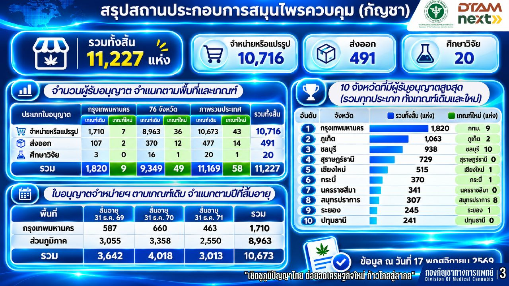
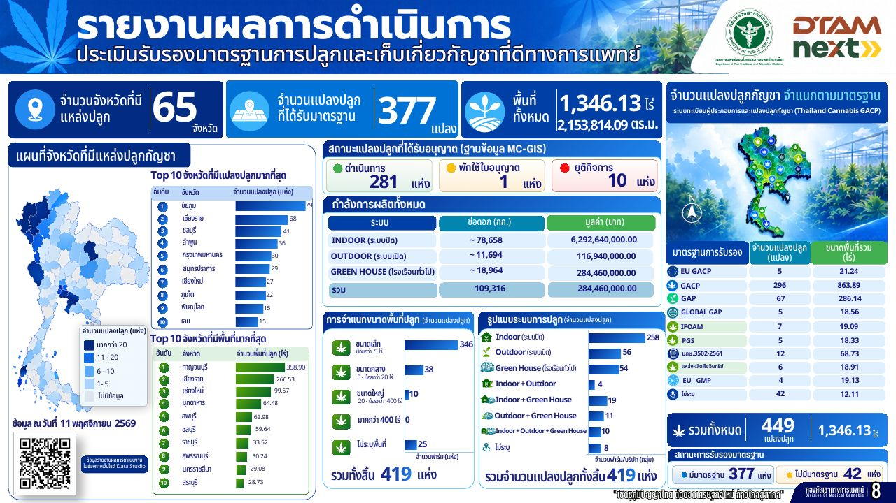
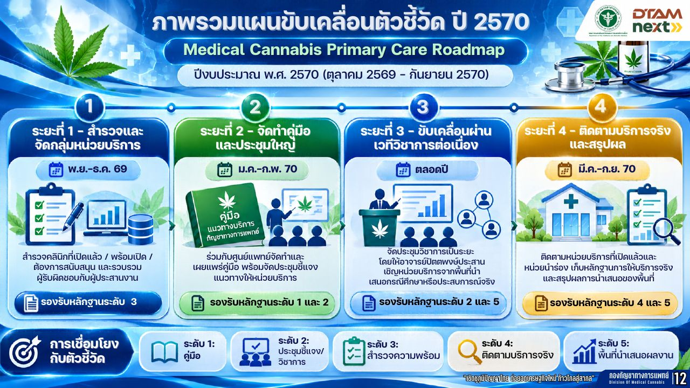
รายละเอียดเพิ่มเติม: ณ 17 พ.ย. 2569 มีสถานประกอบการรวม 11,227 แห่ง (จำหน่ายหรือแปรรูป 10,716 · ส่งออก 491 · ศึกษาวิจัย 20) สมุทรปราการอยู่อันดับ 8 ของประเทศ 307 แห่ง (เกณฑ์ใหม่ 8 แห่ง) ด้านแปลงปลูก ณ 11 พ.ย. 2569 มี 449 แปลง 1,346.13 ไร่ ผ่านมาตรฐาน 377 แปลง สมุทรปราการมี 29 แปลง (อันดับ 6) แผนปี 2570 แบ่ง 4 ระยะ: ระยะที่ 1 สำรวจ/จัดกลุ่ม พ.ย.–ธ.ค. 69 · ระยะที่ 2 คู่มือ/ประชุมใหญ่ ม.ค.–ก.พ. 70 · ระยะที่ 3 เวทีวิชาการตลอดปี · ระยะที่ 4 ติดตามบริการจริง มี.ค.–ก.ย. 70
6) ภูมิปัญญา หมอพื้นบ้าน ทะเบียนตำรับ และกฎหมาย (กคพ. · กม.)
ตัวชี้วัดของ กคพ. ที่จังหวัดต้องดำเนินการ
| ตัวชี้วัด | เป้า |
|---|---|
| 1) หมอพื้นบ้านที่ได้รับการรับรองตามระเบียบกระทรวงฯ พ.ศ. 2562 ได้รับการอบรม/เพิ่มพูนทักษะ | ไม่น้อยกว่า ร้อยละ 50 |
| 2) ภูมิปัญญาการแพทย์แผนไทย/การแพทย์พื้นบ้าน/สมุนไพร ที่มีข้อมูลสถานะการนำไปใช้ประโยชน์ รวมโอกาสและแผนพัฒนาในปี 70 (รวมตำรับที่มีกัญชาเป็นส่วนผสมที่มีการส่งเสริมการใช้ประโยชน์) | จังหวัดละ ไม่น้อยกว่า 3 รายการ/เรื่อง |
| 3) ดำเนินภารกิจบทบาทนายทะเบียนจังหวัด (เลือกกิจกรรมตามบริบทพื้นที่ รายงานความก้าวหน้า) | ไม่น้อยกว่า 4 กิจกรรมหลักสำคัญ |
- ระดับกอง: แปล/ถ่ายถอดตำรับยาแผนไทยด้วย AI และประกาศคุ้มครองเป็นภูมิปัญญาของชาติ ไม่น้อยกว่า 10,000 รายการ (หน้า 2 ของไฟล์) · เอกสารระบุถ่ายดิจิทัลตำรา 4,324 ตำรา (หน้า 12 ของเด็ค ผอ.กคพ.)
- เด็ค ผอ.กคพ. มีข้อมูลจำนวนตำรับ/ตำราจากนายทะเบียนจังหวัด 76 จังหวัด (พ.ย. 69) และกรณีศึกษา 2 พื้นที่: ชาติพันธุ์กุย จ.สุรินทร์ และวัดบ้านสวน จ.พัทลุง เชื่อมฐานทรัพยากร วัฒนธรรมการสืบทอด และสิทธิตามร่าง พ.ร.บ.ฉบับใหม่ (ตัวเลขในสไลด์ส่วนใหญ่เป็นกราฟ ต้องเปิดดูหน้า 4–7)
- กม. โครงการยกร่างกฎหมายลำดับรอง ปี 70: Q1 แต่งตั้งคณะกรรมการยกร่าง → Q2 ประชุม/มีมติเห็นชอบร่าง → Q3 เสนอผู้มีอำนาจลงนาม/ส่ง ครม. → Q4 ประกาศราชกิจจานุเบกษา (เป้าอย่างน้อย 1 ฉบับ) เพื่อให้ครอบคลุมภูมิปัญญาของชุมชน ปรับมาตรการ บทกำหนดโทษ และอัตราค่าธรรมเนียม
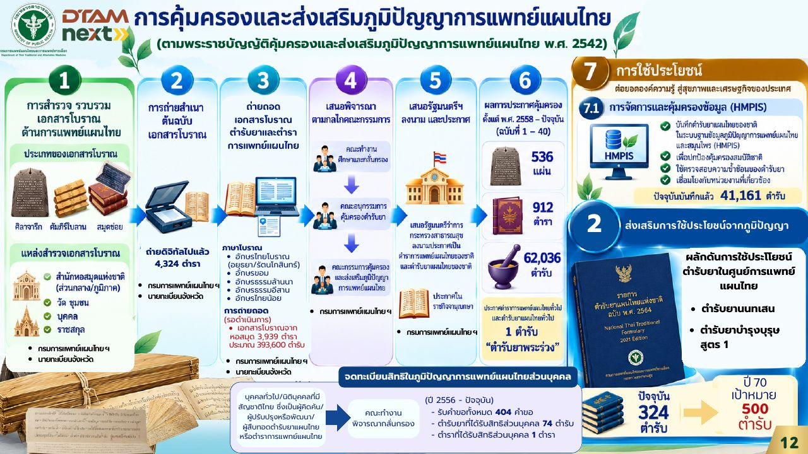
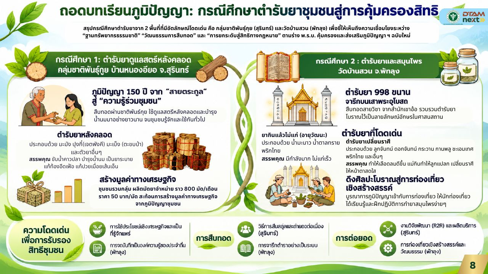
รายละเอียดเพิ่มเติม: บันทึกตำรับยาไทยในระบบ HMPIS แล้ว 41,161 ตำรับ ถ่ายดิจิทัลเอกสารโบราณแล้ว 4,324 ตำรา จดทะเบียนสิทธิในภูมิปัญญาส่วนบุคคลปัจจุบัน 324 ตำรับ เป้าหมายปี 2570 คือ 500 ตำรับ กรณีศึกษา: ตำรับยาดูแลสตรีหลังคลอด จ.สุรินทร์ และตำรับยาวัดบ้านสวน จ.พัทลุง (998 ขนาน)
7) บริการแผนไทยและการแพทย์ทางเลือก (สพท. · ศพท. · สทล. · สอว. · กวน.)
7.1 สพท. — 7 ตัวชี้วัด (ประเด็น "ยกระดับบริการสู่มาตรฐานพรีเมียมสากล")
| # | ตัวชี้วัด | เป้า |
|---|---|---|
| 1 | รพศ./รพท./รพช. ที่จัดบริการดูแลผู้ป่วยโรคหลอดเลือดสมองระยะกลาง (IMC) | ≥ 80% (นับเฉพาะสังกัด สป.) |
| 2 | ผู้ป่วยอัมพฤกษ์ อัมพาตระยะกลาง ที่ได้รับการดูแลด้วยแพทย์แผนไทยและทางเลือก (coverage) 🏅 PA จังหวัด ตัวชี้วัด PA หลักของจังหวัดสมุทรปราการ ปี 2570 (เป้าหมาย ≥ 25%) | 25% (ปัจจุบัน 16.59% = 43,751 จาก 263,786 ราย, HDC 10 พ.ย. 69) ขยายสู่ IMC ที่บ้าน |
| 3 | รพศ./รพท./รพช. ที่จัดบริการผดุงครรภ์ไทยแบบบูรณาการ | ≥ 80% |
| 4 | หญิงหลังคลอดที่ได้รับบริการผดุงครรภ์ไทยแบบบูรณาการ | ≥ 40% |
| 5 | หมอนวดมือทองในสถานประกอบการที่ผ่านมาตรฐาน TWD และมีระบบประเมินความพึงพอใจ | ≥ 300 คน |
| 6 | ส่งเสริมภาพลักษณ์และมาตรฐานนวดไทย 4 โพธิ์ (ล้านนา · ออนซอน · ทศวาโย · ทักษิณา) | สำเร็จ ระดับ 5 |
| 7 | ชุดองค์ความรู้นวดไทยจัดทำเป็นหลักสูตร | ≥ 4 หลักสูตร |
ตัวอย่างโมเดลปฏิบัติ: โรงพยาบาลนากลาง จ.หนองบัวลำภู บรรยายการบูรณาการภูมิปัญญาไทยในบริการผดุงครรภ์ไทย (นวด ประคบ ทับหม้อเกลือ อบไอน้ำ ฯลฯ) การบริบาลหญิงหลังคลอด และการทำงานร่วมกับหมอพื้นบ้าน พร้อมแนวทางพัฒนาปีงบ 70
7.2 สทล. — 3 ตัวชี้วัด
- คลินิกอายุวัฒนะ: บุคลากรอบรม ≥ 600 คน · รพช. จัดตั้งคลินิก ≥ 80% (616 จาก 770 แห่ง) · มีคู่มือ/แนวทางดูแล ความก้าวหน้าสะสมตามไตรมาสเริ่มที่ ≥50% (385 แห่ง) ไปถึง ≥80% (616 แห่ง) · เพิ่มดูแลกลุ่มอาการไม่หลับ-เครียด และปวดกล้ามเนื้อ-ข้อเรื้อรัง
- ฟื้นฟูชีวิตใหม่ (New Life by DTAM) ผู้ติดยาเสพติด: บุคลากรได้รับการพัฒนา ≥ 500 คน · สถานพยาบาลยาเสพติดใช้แพทย์แผนไทย/ทางเลือกดูแลผู้ป่วยกลุ่มสีเขียว/เหลือง ≥ 80% · มีคู่มือ · ผู้ป่วยสีเหลือง (ผู้เสพ) ราว 450,000 คน (ประมาณการ 2566) · เทคนิคเช่น SKT กดจุด สุคนธบำบัด
- TCM HA: พัฒนามาตรฐานโรงพยาบาลและบริการสุขภาพด้านแพทย์แผนจีน (ยังไม่มีเกณฑ์สำหรับภาครัฐ) · FY68 ผู้ป่วยแพทย์แผนจีนใน HDC 281,918 คน / 720,669 ครั้ง · Q1 ตั้งคณะทำงาน → Q2 คู่มือการประเมิน → Q3 อบรม → Q4 จำนวน รพ. ที่มีคลินิกแผนจีนเข้าสู่มาตรฐาน (ตัวเลขเป้าในสไลด์อ่านไม่ชัด ดูหน้า 3)
7.3 ศพท. — ศูนย์การแพทย์แผนไทยฯ 16 แห่ง
- ยาปรุงเฉพาะรายครบ 5 กลุ่มโรค/อาการ (นอนไม่หลับ, NCDs, สะเก็ดเงิน, บำรุงเพศชาย–หญิง, มะเร็ง) 100% · คลินิกเฉพาะทาง ≥4 คลินิก 100% · อบรมนวดเศรษฐกิจใหม่ ≥80% · ได้รับมาตรฐานรับรองจากสภาการแพทย์แผนไทย ≥80% · ตัวชี้วัดที่ 3 ด้านวิจัยและนวัตกรรม
- คลินิกเฉพาะทางที่เปิดแล้ว (จำนวนศูนย์): กัญชา 14 · สะเก็ดเงิน/ผิวหนัง 14 · อายุวัฒนะ 9 · บำบัดยาเสพติด 9 · มารดาหลังคลอด 7 · NCDs 7 · นวดไทยเชี่ยวชาญ 5 · นอนไม่หลับ 4 · ข้อเข่าเสื่อม 3 · Office Syndrome 3 · อัมพฤกษ์-อัมพาต 2 · แพทย์แผนจีน 2
7.4 สอว. และ กวน.
- สอว.: ยกระดับ Thai Food Good Health (TFGH) สู่มาตรฐานอาหารสุขภาพระดับสากล ประกวดเมนู TFGH ระดับ 4 ดาว เป้า 77 จังหวัด ส่งเสริมวัตถุดิบ GI ในจังหวัด
- กวน.: Wellness & Longevity — ยกระดับมาตรฐาน Thailand Wellness Destination (TWD) และ Community (TWC) สิทธิ์ใช้ตราสัญลักษณ์ TWD ตามระดับ 3–5 ดาว โปรโมตร่วม ททท. และการเชิดชูเกียรติ
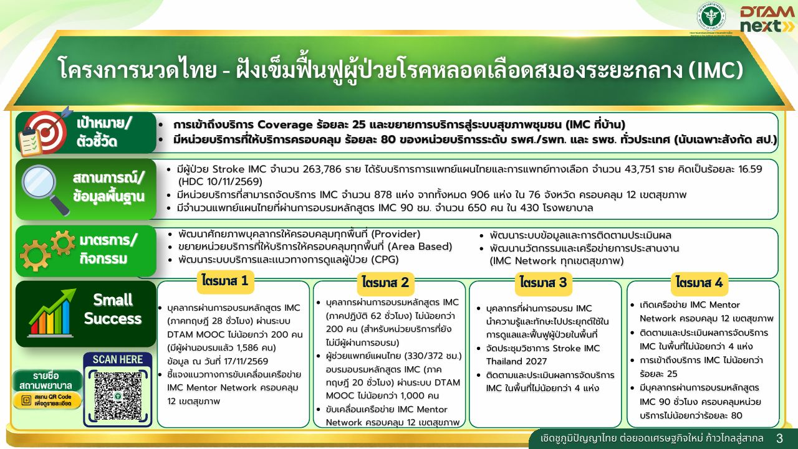
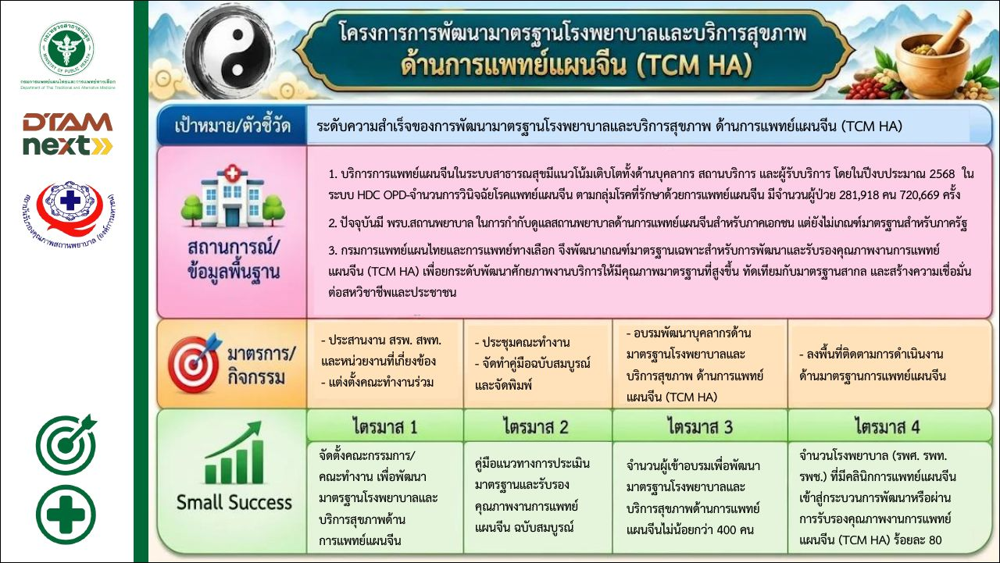
รายละเอียดเพิ่มเติม: IMC🏅 PA จังหวัด: ผู้ป่วย Stroke IMC 263,786 ราย ได้รับบริการแผนไทย/ทางเลือก 43,751 ราย (16.59%) หน่วยบริการที่จัดบริการได้ 878 จาก 906 แห่ง เป้าหมายเข้าถึงบริการร้อยละ 25 และหน่วยบริการครอบคลุมร้อยละ 80 · TCM HA: ปี 2568 ผู้ป่วยแพทย์แผนจีนในระบบ HDC OPD 281,918 คน 720,669 ครั้ง เป้าหมายไตรมาส 4 โรงพยาบาลที่มีคลินิกแพทย์แผนจีนเข้าสู่กระบวนการพัฒนาหรือรับรอง ร้อยละ 80
8) สมุนไพรเชิงเศรษฐกิจ (กนพ.)
- ปัญญ-พัฒน์ สร้างขีดความสามารถผู้ประกอบการสมุนไพร: ผู้ประกอบการได้รับการอบรมตาม พ.ร.บ.ผลิตภัณฑ์สมุนไพร พ.ศ. 2562 จำนวน 216 ราย · 6 หลักสูตร · แผนธุรกิจ/ผลิตภัณฑ์ต้นแบบ ≥6 · ผู้เข้าร่วม 80% มีคะแนนสมรรถนะเพิ่มขึ้น
- ปลูกไทยด้วยใจรักษ์ และ THAI FARMA HUB: เกษตรพันธสัญญากับโรงงานยาสมุนไพรภาครัฐ 20 คู่ · โรงงานมีแหล่งวัตถุดิบคุณภาพ 10 แห่ง · ผลิตภัณฑ์ต้นแบบ 12 · ผลิตภัณฑ์พรีเมียม 150 รายการ
- กิจกรรมต่อยอด: ประกวดผลิตภัณฑ์สมุนไพรดีเด่นภาครัฐ รางวัล "ปลูกไทยด้วยใจรักษ์" · Roadshow งานจัดแสดงสินค้าที่ประเทศจีน 4 เมือง (รับสมัคร 6 ธ.ค. 69 – 21 ม.ค. 70)
9) วิจัยและกองทุนภูมิปัญญาการแพทย์แผนไทย
สวพ. — แผนวิจัยที่ตอบโจทย์ยุทธศาสตร์ (1 แผน)
- Q1 (ต.ค.–ธ.ค. 69) ได้แผนวิจัยที่เชื่อมยุทธศาสตร์กรมฯ และประเทศ · Q2 ผลักดันตำรับยาแผนไทยแห่งชาติ (324 ตำรับ) เข้าบัญชียาหลัก 20 ตำรับ · Q3 ขับเคลื่อน matching งานวิจัยร่วมกับภาคีเครือข่าย · Q4 ผลการวิจัยที่ต่อยอดเชิงนโยบาย ≥7 เรื่อง (ตาม 7 Wonders)
- 7 Wonders Growth Engines (ทิศทางวิจัย 2571–2575): อาหารและเครื่องดื่มฟังก์ชัน · นวัตกรรมชีวภาพสมุนไพรระดับอุตสาหกรรม · เวชสำอางชะลอวัย · ผลิตภัณฑ์กัญชาทางการแพทย์ที่ได้มาตรฐานและปลอดภัย · สมุนไพรเพื่อสุขภาพสัตว์เลี้ยง · Wellness & Longevity · Digital Health
กองทุนภูมิปัญญาการแพทย์แผนไทย (ตาม พ.ร.บ.คุ้มครองฯ มาตรา 76)
- กติกาสำคัญ: ผู้ขอทุนรับได้ไม่เกิน 2 โครงการต่อปีงบประมาณ · ค่าตอบแทนไม่เกิน 25% ของวงเงิน · ค่าอุดหนุนสถาบันไม่เกิน 10% · แบ่งเป็นโครงการทั่วไปและโครงการวิจัย (โครงการวิจัยต้องผ่านจริยธรรมการวิจัย EC)
- ภาพรวม 10 ปี (2559–2568): 178 โครงการ วงเงิน 161.18 ล้านบาท — ภายนอกกรม 156 โครงการ 120.21 ล้านบาท (74.6%) · ภายในกรม 22 โครงการ 40.98 ล้านบาท (25.4%)
- ตามศาสตร์: เภสัชกรรมไทย 132 โครงการ 122.66 ล้านบาท (76%) · เวชกรรมไทยและแพทย์พื้นบ้าน 28 โครงการ 30.29 ล้านบาท (18%) · นวดไทย 14 โครงการ 5.56 ล้านบาท · ผดุงครรภ์ไทยและอื่นๆ 4 โครงการ 2.67 ล้านบาท
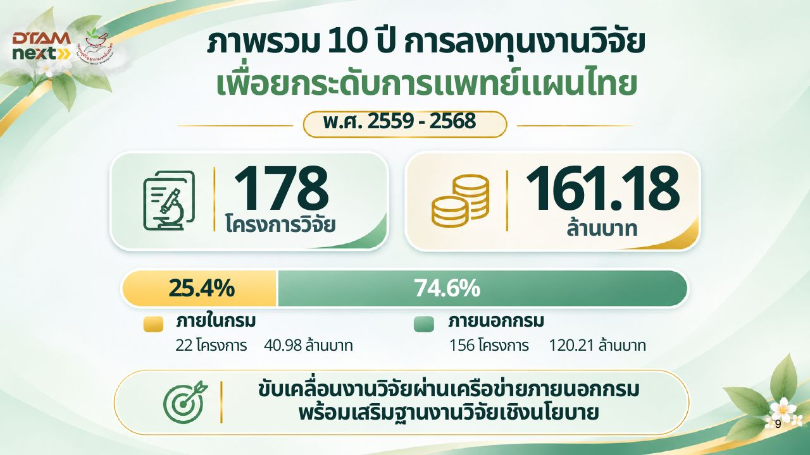
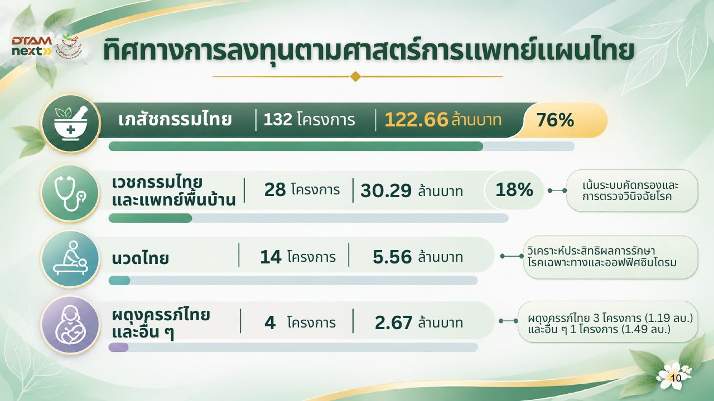
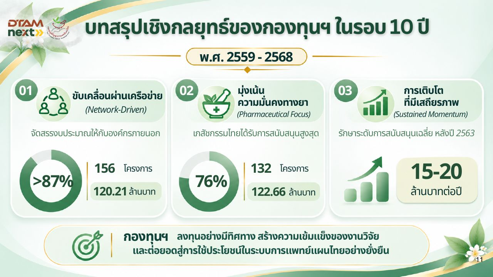
รายละเอียดเพิ่มเติม: พ.ศ. 2559–2568 ลงทุนงานวิจัย 178 โครงการ 161.18 ล้านบาท (ภายนอกกรม 156 โครงการ 120.21 ล้านบาท = 74.6%) เภสัชกรรมไทยได้รับสูงสุด 132 โครงการ 122.66 ล้านบาท (76%) รองลงมาเวชกรรมไทยและแพทย์พื้นบ้าน 28 โครงการ 30.29 ล้านบาท (18%) นวดไทย 14 โครงการ 5.56 ล้านบาท และผดุงครรภ์ไทยและอื่น ๆ 4 โครงการ 2.67 ล้านบาท รักษาระดับสนับสนุนเฉลี่ย 15–20 ล้านบาทต่อปีหลังปี 2563
10) วันที่ 20 พ.ย. — เวทีรับฟังข้อเสนอจากเครือข่ายภูมิภาคและ สสจ. 76 จังหวัด
- กรอบคิด: คุ้มครองภูมิปัญญา → พัฒนาคุณภาพและมาตรฐาน → ใช้ประโยชน์จริง → สร้างมูลค่าอย่างเป็นธรรม โดยใช้ปัญหาสุขภาพและศักยภาพจังหวัดเป็นตัวตั้ง
- 6 ภารกิจบูรณาการ: (1) คุ้มครองภูมิปัญญา สำรวจตำรา ตำรับยา หมอพื้นบ้าน (2) พัฒนาระบบบริการ คุณภาพ ความปลอดภัย (3) ส่งเสริมแพทย์พื้นบ้าน (4) จัดการทรัพยากร สำรวจสมุนไพรอัตลักษณ์ แหล่งปลูก (5) วิจัยและนวัตกรรม คัดตำรับที่มีศักยภาพ (6) สร้างเศรษฐกิจสุขภาพ ผลิตภัณฑ์และ Wellness
- เครือข่าย 3 ระดับ: กรมฯ (นโยบาย มาตรฐาน ฐานข้อมูลกลาง) → ภูมิภาค/เขตสุขภาพ (ประสานแผนระหว่างจังหวัด) → จังหวัด/สสจ. 76 จังหวัด (สำรวจ วิเคราะห์ จัดทำแผนตามบริบท ขับเคลื่อนและรายงานผล) · ข้อมูลจังหวัด 4 ด้าน: ภูมิปัญญา | สมุนไพร | บริการสุขภาพ | วิจัยและนวัตกรรม
- ตัวอย่างจากพื้นที่: นครพนมโมเดล (ผลิตภัณฑ์ รายได้ชุมชน เส้นทางท่องเที่ยว), นายทะเบียนจังหวัดสุรินทร์, ปราชญ์เมืองศรี ศรีสะเกษ (ไฟล์ส่วนใหญ่เป็นภาพ อ่านเป็นข้อความไม่ได้ ต้องเปิดดูในไฟล์ต้นฉบับ)
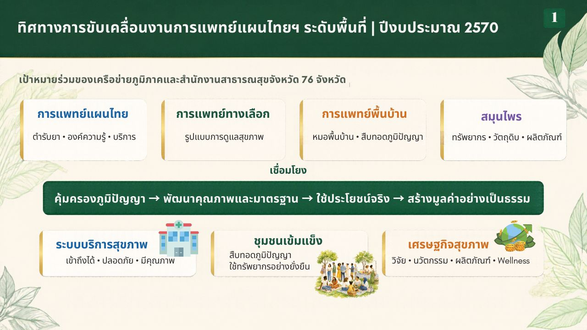
11) ข้อเสนอเชิงปฏิบัติสำหรับ สสจ.สมุทรปราการ (ความเห็นของผู้จัดทำ)
| ช่วงเวลา | สิ่งที่ควรเริ่ม | อ้างอิงเป้า |
|---|---|---|
| ตอนนี้ – 31 ธ.ค. 69 (Q1) |
|
กยส. น.10, 21 · กกพ. น.11–13 |
| 18 ธ.ค. 69 | จัดเจ้าหน้าที่เข้าอบรมพิสูจน์เอกลักษณ์กัญชา (Zoom ทั้งวัน) | สวพ. (พิสูจน์กัญชา) |
| 1 ม.ค. 70 | ผู้ประกอบการกัญชาเปลี่ยนไปยื่น/ต่ออายุออนไลน์ 100% ควรแจ้งผู้รับอนุญาตและเจ้าหน้าที่ในจังหวัดล่วงหน้า | กกพ. น.7 |
| Q2 (ม.ค.–มี.ค. 70) | UC herbal: ให้จังหวัดสะสม ≥50% ของเป้าเขต · ยาปรุงเฉพาะราย ≥40% · ตรวจร้านกัญชา 50% · ประชุมใหญ่/คู่มือกัญชาปฐมภูมิ (ม.ค.–ก.พ.) | กยส. น.10, 21 · กกพ. น.11, 13 |
| ต่อเนื่องทั้งปี | กคพ. 3 ตัว (หมอพื้นบ้าน ≥50%, ภูมิปัญญาจังหวัดละ ≥3, นายทะเบียน ≥4 กิจกรรม) · IMC/ผดุงครรภ์ไทย/คลินิกอายุวัฒนะ ใน รพ. | กคพ. น.3–4 · สพท. น.2 · สทล. น.1 |
12) ข้อจำกัดของสรุปนี้
- สรุปจากข้อความที่ดึงได้จากไฟล์ PDF 25 ไฟล์ สไลด์ที่เป็นภาพ/กราฟ (เช่น ปราชญ์เมืองศรี ศรีสะเกษ, นครพนมโมเดล, ศพท. V.2, ตัวเลขในกราฟของ กกพ. และ กคพ.) อ่านเป็นข้อความไม่ได้หรืออ่านได้ไม่ครบ ควรเปิดจากลิงก์ดูหน้าต้นฉบับ
- ไฟล์ของ สุรินทร์ (รหัสตัวอักษรเพี้ยน), เด็ค Hackathon (เฉพาะหน้า 14, 22, 23), และ รพ.นากลาง (เฉพาะหน้าสำคัญ) ได้อ่านบางส่วนเท่านั้น ไม่ได้อ่านครบทุกหน้า
- เอกสารบางฉบับเป็น "ร่าง" หรือ V1 (ร่างสิทธิประโยชน์ สปสช., ไฟล์นโยบายอธิบดี V1.19.11.69) ตัวเลขอาจปรับตามฉบับสุดท้าย
- ลิงก์
#page=ทำงานกับตัวแสดงผล PDF ของ Chrome/Edge ส่วนโปรแกรมอ่าน PDF อื่นอาจเปิดที่หน้าแรกของไฟล์ - ลิงก์เป็นแบบ relative ใช้ได้เมื่อไฟล์ HTML นี้อยู่ในโฟลเดอร์เดียวกับโฟลเดอร์ "วันที่ 19 พ.ย.2569" และ "วันที่ 20 พ.ย.2569" (วางไว้ให้แล้ว) · ชื่อโฟลเดอร์และไฟล์ถูกย่อให้พาธสั้นกว่า 260 ตัวอักษรเพื่อให้ Windows เปิดได้ ชื่อเดิมดูได้ในหัวข้อ 13
13) รายการไฟล์ต้นฉบับทั้งหมด (25 ไฟล์)
| # | ไฟล์ (ชื่อใหม่ที่ย่อแล้ว) | เนื้อหา | ชื่อเดิมใน Zip |
|---|---|---|---|
| 1 | ทิศทางนโยบายกรมฯ ปี70 (อธิบดี).pdf | ทิศทางนโยบายกรมฯ ปี 70 (อธิบดี) | V2.มอบนโยบายกรม_70 191169.pdf |
| 2 | WHO Global Summit เตรียมการ.pdf | เตรียมการประชุม 3rd WHO Global Summit on Traditional Medicine | เตรียมการ WHO Global Summit-Agenda-Committee.pdf |
| 3 | HERB Center Hackathon.pdf | การพัฒนานวัตกรรมดิจิทัลและ AI — HERB Center / Hackathon (สสจ.นราธิวาส) | TTM_Digital_Health_Hackathon.pdf |
| 4 | สื่อสารนโยบายกรมฯ V3.pdf | สื่อสารนโยบายสู่การปฏิบัติ — ตัวชี้วัด 28 ตัว และร่างสิทธิประโยชน์ สปสช. | V3. สื่อสารนโยบายกรมฯ แก้ไข 17.11.69.pdf |
| 5 | House Model สพท.pdf | House Model สพท. — IMC ผดุงครรภ์ นวดไทย | House Model สพท. (1).pdf |
| 6 | House Model ศพท. backup.pdf | House Model ศพท. (backup) | House Model - ศพท . ปี 70 (backup).pdf |
| 7 | House Model ศพท. V2.pdf | House Model ศพท. V.2 | นำเสนอ House Model - ศพท. 70 V.2.pdf |
| 8 | House Model สทล. V3.pdf | House Model สทล. V3 | House Model สทล. V3.pdf |
| 9 | House Model สทล. เพิ่มเติม 13.11.69.pdf | House Model สทล. เพิ่มเติม — อายุวัฒนะ ผู้ติดยา TCM HA | House_Model_สทล. 13.11.69 เพิ่มเติม.pdf |
| 10 | House Model กวน. เวลเนส V4.pdf | House Model กวน. — Wellness & Longevity | V4 ppt-House Model กองเวลเนส.pdf |
| 11 | สอว. ยกระดับ TFGH ปี70.pdf | สอว. — ยกระดับ TFGH ปี 70 | นำเสนอ จ.นครพนม การดำเนินงานยกระดับ TFGH ปี 2570.pdf |
| 12 | กยส. ชี้แจงตัวชี้วัด ปี70.pdf | กยส. — ชี้แจงตัวชี้วัด ปี 70 (UC herbal, ยาปรุงเฉพาะราย) | ชี้แจงตัวชี้วัด ปีงบประมาณ 2570 กยส.pdf |
| 13 | House Model กคพ. 16.11.pdf | House Model กคพ. | House Model กคพ รวม 16.11.pdf |
| 14 | กนพ. House Model V4.pdf | House Model กนพ. — เศรษฐกิจสุขภาพ | กนพ - V.4 House Model การขับเคลื่อนนโยบาย.pdf |
| 15 | กกพ. กัญชาทางการแพทย์ REV5.pdf | กกพ. — กัญชาทางการแพทย์ (REV5) | REV5 กองกัญชาทางการแพทย์ House model.pdf |
| 16 | สวพ. House Model แผนวิจัย.pdf | สวพ. — แผนวิจัย | house Model แผนวิจัย(สื่อสารพื้นที่) สวพ. 18 11 69.pdf |
| 17 | สวพ. อบรมพิสูจน์เอกลักษณ์กัญชา.pdf | สวพ. — อบรมพิสูจน์เอกลักษณ์กัญชา | นำเสนอการตรวจจำแนกกัญชาฯ เพิ่มเติม2.pdf |
| 18 | กม. House Model 16 พย 69.pdf | กม. — ยกร่างกฎหมายลำดับรอง | House Model กม. 16 พย 69.pdf |
| 19 | กองทุนภูมิปัญญา ประชุมสัญจร 19พย69.pdf | กองทุนภูมิปัญญาการแพทย์แผนไทย | V4 นำเสนอกองทุนฯ-ประชุมสัญจรกรม นครพนม 19พย69.pdf |
| 20 | รพ.นากลาง บูรณาการภูมิปัญญาไทย.pdf | รพ.นากลาง — บูรณาการภูมิปัญญาไทย | 19.11.69_ร.พ.นากลาง_การบูรณาการภูมิปัญญาไทย.pdf |
| 21 | 1 ผอ.กคพ. ภูมิปัญญาสู่เศรษฐกิจสุขภาพ.pdf | ผอ.กคพ. — ขับเคลื่อนภูมิปัญญาสู่เศรษฐกิจสุขภาพ | 1. การขับเคลื่อนภูมิปัญญาการแพทย์แผนไทยสู่เศรษฐกิจสุขภาพ (ผอ.กคพ.).pdf |
| 22 | 2 นครพนมโมเดล สสจ.นครพนม.pdf | นครพนมโมเดล (สสจ.นครพนม) | 2. บทบาทของเครือข่ายภูมิภาคในการสรา้งมูลค่าเพิ่ม นครพนมโมเดล (อ.วาสนา ศรีวะรมย์) สสจ.น.pdf |
| 23 | 3 สุรินทร์ นายทะเบียน.pdf | สำนักนายทะเบียนจังหวัดสุรินทร์ | 3. การดำเนินงานสำนักนายทะเบียนจังหวัดสุรินทร์ (อ.เอื้องไพร จันทรชิต) จ.สุรินทร์).pdf |
| 24 | ปราชญ์เมืองศรี ศรีสะเกษ.pdf | ปราชญ์เมืองศรี (สสจ.ศรีสะเกษ) — ไฟล์เป็นภาพ | ต่อยอดภูมิปัญญา สร้างมูลค่า ปราชญ์เมืองศรี (อ.ภาวนา โสภาลี) สสจ.ศรีสะเกษ.pdf |
| 25 | ผอ.กคพ. ทิศทางงานพื้นที่.pdf | ผอ.กคพ. — ทิศทางงานระดับพื้นที่ (เครือข่ายภูมิภาค) | ทิศทางการขับเคลื่อนงานด้านการแพทย์แผนไทยฯ (ผอ.กคพ.).pdf |